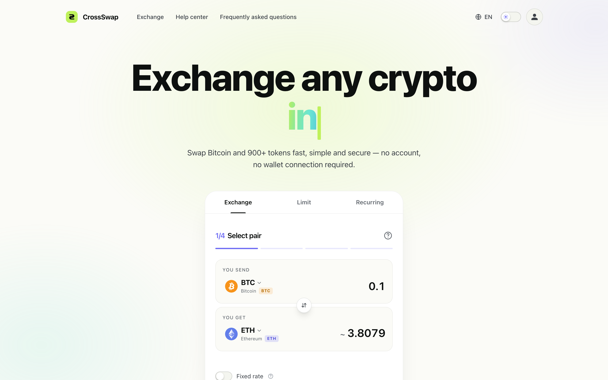
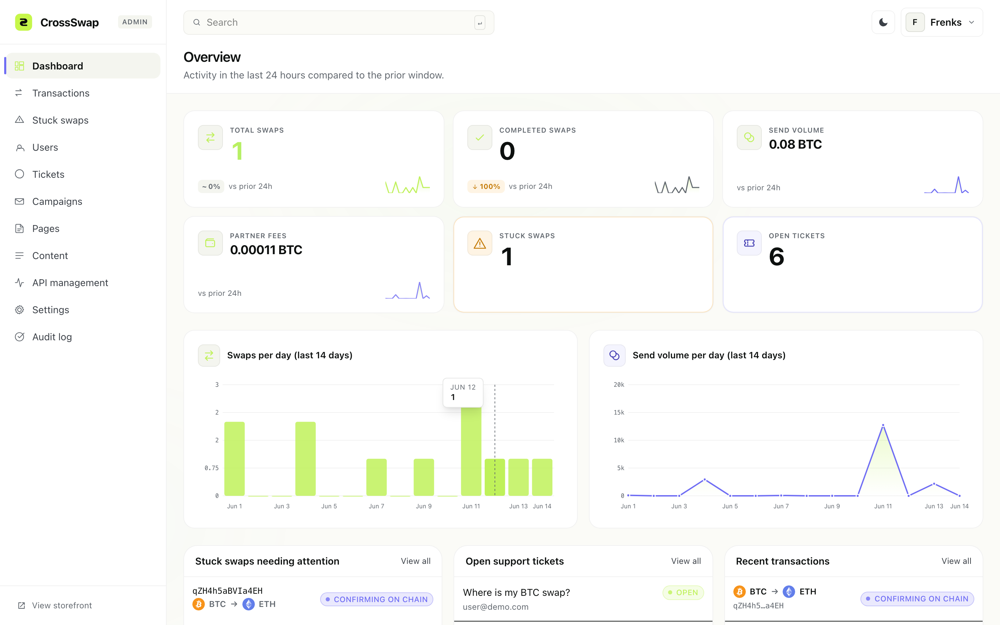
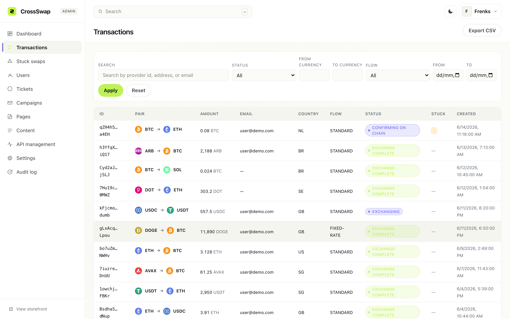
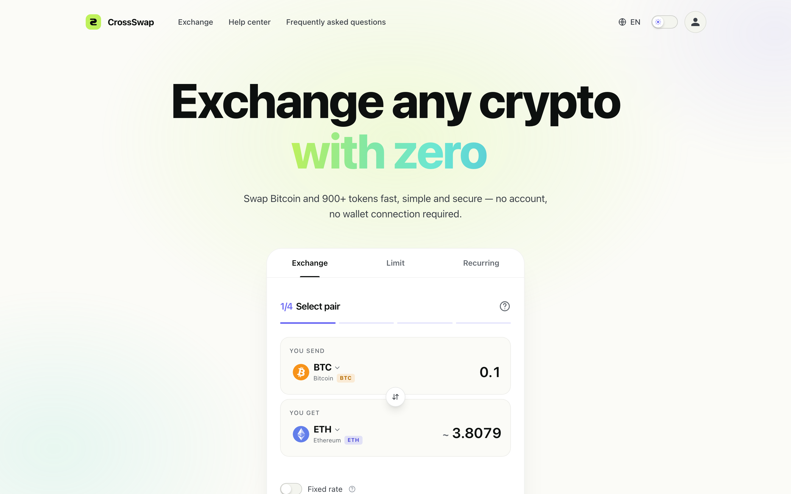
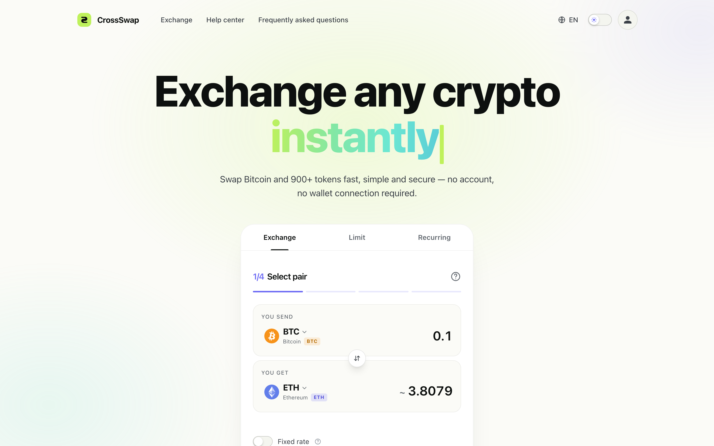
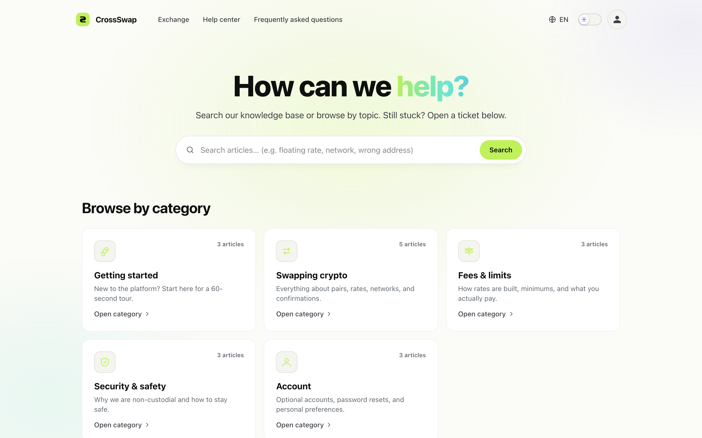
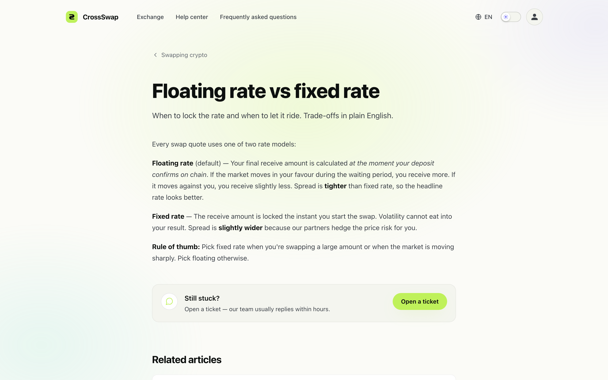

CrossSwap Documentation
Welcome. CrossSwap is a self-hosted cross-chain swap front end powered by Laravel 12, Inertia, and React 19. This guide walks you through everything from server requirements to the admin panel and the internal API.

Try the live demo
Skip the install — the full product is running at cross-swap.blockshark.com. Sign in with either of the demo accounts below:
What's new in 1.1.0
The 1.1.0 release lands a major content-management upgrade plus several storefront polish wins. Full notes live in the bundled CHANGELOG.md.
- Multi-locale Pages CMS — one record per page, translated title/excerpt/body per language. Public
/p/{slug}resolves the active locale with sane fallbacks. - Content CMS — admins edit the four homepage marketing sections (Highlights, Reviews, Stats, How it works) per locale with no code.
- Markdown editor — the admin Pages screen ships a tabbed Write/Preview editor with a toolbar; no external dependency.
- Rate slider — the limit-order form now uses a slider from -50% to +200% around the live market rate, with quick chips.
- Typewriter headline — the homepage hero cycles through four localised taglines and respects
prefers-reduced-motion.
Quick links
What is CrossSwap?
CrossSwap is a complete white-label cryptocurrency exchange storefront. Visitors can swap between 900+ tokens without creating an account or connecting a wallet. Behind the scenes, CrossSwap proxies the ChangeNOW partner API, signs transactions, tracks status, and provides a polished React-based UI plus a full admin panel for operators.
The application ships ready for production: queue workers, scheduled jobs, audit logging, role-based admins, multi-language storefront, ticket-based support, and a one-time browser installer all included.
Table of contents
Server requirements, hosting compatibility, the browser installer walked through screen-by-screen, manual install, HTTPS, and a post-install checklist.
Branding, languages, ChangeNOW key, AI chat, legal URLs, and the featured / blacklist currency lists.
File layout, adding a new language, recolouring the theme, swapping the logo, and customising email templates.
The public REST proxy under /api/exchange/* plus the support, chat, limit-order, and recurring endpoints.
Stuck transactions, missing API keys, queue worker hiccups, mail delivery, migrations, and HTTPS mixed content.
Quick answers about fees, accounts, KYC, shared hosting, refunds, and how updates are delivered.
System requirements at a glance
- PHP 8.2+ with extensions:
mbstring,openssl,pdo,curl,fileinfo, and eithergdorimagick. - SQLite 3.35+, MySQL 8.0+ / MariaDB 10.6+, or PostgreSQL 14+.
- Redis for queues and cache (recommended; the database driver works as a fallback).
- A long-running queue worker via Laravel Horizon for status polling.
- Outbound HTTPS access to
api.changenow.io. - A free ChangeNOW partner API key — see Configuration.
The full matrix with minimums and recommended versions lives on the Installation page.
Architecture in a sentence
Visitors place swap requests through the React storefront; Laravel proxies upstream API calls, persists every transaction, and Horizon-backed queues poll status until each swap reaches a terminal state. Operators manage everything from the bundled admin panel shown below.


Storefront highlights
Hero, features, and a curated “Popular pairs” band ship out of the box — all editable per-locale from the new Content CMS.


Need a hand?
The bundled Help Center mirrors the FAQ for end-customers and is fully translatable.

